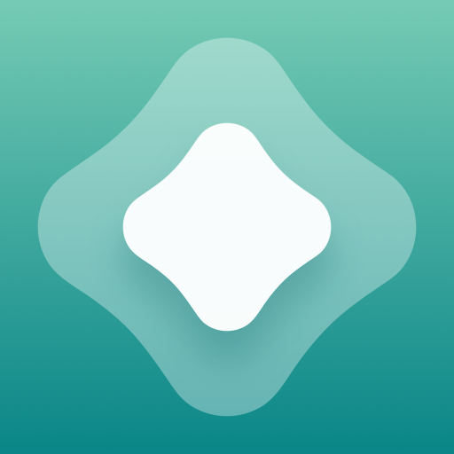

You do not need to know what AltStore, SideStore, LiveContainer or a Source means yet. Pick what you want to do and we will point you to the right option.

ALTSTORE
I want AltStore — PAL or Classic?
AltStore PAL is the simple marketplace option in supported regions and does not install arbitrary IPA files. AltStore Classic installs IPA files worldwide, uses free Apple signing and can now refresh through Remote AltServer after setup.
I want to install .ipa files and refresh them later from my iPhone
You now have two good free routes. SideStore is built around on-device refresh after the first setup. AltStore Classic can also install and refresh without your own computer after you pair it with Remote AltServer.
I want to install IPA files mainly from my computer
Sideloadly is the most direct desktop route and supports iPhone, iPad, Apple Silicon Mac and Apple TV, including Wi-Fi sideloading and automatic re-signing. AltStore Classic is useful if you also want Sources and the AltStore library workflow.
Use LiveContainer. It is not another store: it runs guest IPA apps inside one container, so the normal 3-app / 10-App-ID free-account limit does not apply to those guest apps. The LiveContainer + SideStore build is the easiest combined setup.
Sideloadly installs IPA files directly to Apple TV from Windows or macOS. If you want a self-hosted service on Linux or OpenWrt, use atvloadly instead.
Still not sure? If you are in the EU and only want approved alternative-marketplace apps, pick AltStore PAL. If you want to install your own IPA files, SideStore is the easiest ongoing workflow after the first setup. Add LiveContainer only when you actually need more apps.
What do these names mean?
Five short explanations before you choose anything.
AltStore PAL
EU-only alternative app marketplace. No arbitrary IPA sideloading, no 7-day expiry and no computer requirement.
AltStore Classic
Traditional sideloading app for IPA files. Works worldwide, uses a free Apple ID and normally needs AltServer for signing and refreshing.
SideStore
An AltStore-style sideloading app designed so that after the first setup you can install and refresh apps from the iPhone itself using LocalDevVPN.
LiveContainer
A launcher, not a store. It runs multiple guest IPA apps inside one installed container. You normally use it together with SideStore or AltStore.
Source
A Source is just a catalog link that tells AltStore or SideStore which apps and updates are available. Adding a Source does not install anything by itself — it only adds that catalog to your app browser.
Once you know what you need, compare the individual free methods below.
SI
NEWiOS 27
Install SideStore without a PC on iOS 27
SideInstaller installs SideStore or SideStore + LiveContainer fully on-device on iOS/iPadOS 27. SideInstaller v1 adds partial iOS 17–26 support when you already have a pairing file created with a computer.
Use only sideinstaller.net or the official FrizzleM/SideInstaller GitHub repository when entering Apple account credentials.
A practical comparison of the free paths. Exact requirements can change, so the official documentation links remain the final reference.
Tool
Best for
Device / OS
Computer
Refresh / expiry
Free Apple account
AltStore Classic
Classic sideloading
iPhone / iPad
Windows or macOS with AltServer
7-day apps; refresh via AltServer over same Wi-Fi or USB
Yes
AltStore + Remote AltServer
Install and refresh without your own computer
iPhone / iPad
PC pairing is required for setup; afterwards the remote server is used
Wi-Fi + LocalDevVPN required; cellular is not supported
Yes
SideInstaller
On-device SideStore / LiveContainer setup
iOS/iPadOS 27; partial 17–26 support with an existing pairing file
No PC on iOS/iPadOS 27; iOS 17–26 requires an existing pairing file created with a computer
Installer only; refreshing is then handled by SideStore
Yes
SideStore
On-device refresh after setup
iOS / iPadOS 15+
Initial install only: Windows, macOS, Linux or Chromebook
LocalDevVPN must be enabled for install, update and refresh
Yes
LiveContainer + SideStore
Many guest apps in one container
iOS / iPadOS 15+
Initial install through Impactor, iloader or an existing standalone SideStore
Refresh the container / SideStore; guest apps run inside LiveContainer
Yes
Sideloadly
Direct IPA signing from desktop
iPhone / iPad / Apple TV
Windows or macOS
7-day free signing; optional auto-refresh daemon via Wi-Fi / USB
Yes
TrollStore
Permanent installs on compatible iOS
iOS/iPadOS 14.0 beta 2–16.6.1, 16.7 RC, and 17.0
Depends on the installation path
No 7-day refresh on supported versions
Not required for signing
atvloadly
Self-hosted Apple TV sideloading
Apple TV
Linux or OpenWrt host
Self-hosted pairing and automatic refresh workflow
Yes
Free Apple account limits With normal free development signing, apps generally expire after 7 days and must be refreshed. AltStore documents a 3-app device limit and up to 10 registered App IDs at a time. LiveContainer + SideStore can reduce pressure on those slots by running guest apps inside the container.
Troubleshooting
Search the common problems below. Start with the short fix, then open the official documentation if it still fails.
Apple ID login fails, HTTP 503 or 2FA does not work
For SideStore sign-in issues, try another Anisette Server first; if the Apple verification code does not arrive, request one manually from Apple Account settings. SideInstaller v1.0.0 also documents fixes for HTTP 503, SMS/call 2FA and reusable session IDs.
LiveContainer + SideStore does not refresh automatically
OFFICIAL DOCS
First make sure Wi-Fi + LocalDevVPN are active and a manual Refresh All works in the built-in SideStore. LiveContainer's official LC+SS guide says the auto-refresh Shortcut can be used by replacing SideStore's Refresh All Apps action with LiveContainer's action.
Community reports suggest first confirming that manual Refresh All works. For Shortcuts, keep Refresh All Apps as the final refresh action, avoid turning LocalDevVPN off too early, and if one app still refuses to refresh try long-pressing it in SideStore and choosing Resign. These are community workarounds, not official SideStore requirements.
LocalDevVPN connects but refresh still fails on iOS 27
COMMUNITY WORKAROUND
A community workaround reported on Reddit is to set Tunnel IP to 10.7.0.2/30 and Device IP to 10.7.0.1/32 in LocalDevVPN. This is not an official SideStore fix and does not help every device, so use it only after the official Wi-Fi, LocalDevVPN, pairing and DNS-blocker checks.
SideStore pairing stopped working after an iOS update or reset
SideStore documents that pairing files can expire after an update or reset, and sometimes unexpectedly. Update iloader, delete the stored pairing, pair/trust the device again, place the new pairing file for SideStore, reconnect LocalDevVPN and refresh.
SideStore error 1005 / 1007 — app not found or invalid IPA
Error 1005 means SideStore could not find the app file at the provided URL. Error 1007 means the downloaded file is not a standard IPA. Re-download from the original source or try another verified source.
SideStore's official troubleshooting guide says nightly builds may contain unstable bleeding-edge changes. If a problem appears only on nightly, switch back to the latest stable build before deeper troubleshooting.
Turn on LocalDevVPN first and make sure the device is on Wi-Fi. SideStore requires its on-device VPN whenever you install, update or refresh apps. If needed, reconnect the VPN and reopen SideStore.
This is normal with a free Apple development account. Refresh the app before expiry with SideStore, AltStore or Sideloadly. If you use AltStore, AltServer must be reachable. Sideloadly can use its auto-refresh daemon.
Make sure AltServer is running and the computer is on the same Wi-Fi as the iPhone/iPad, or connect the device by USB. On Windows, firewall rules and the Apple versions of iTunes/iCloud can also matter.
Remote AltServer cannot be reached or is unavailable
Make sure Wi-Fi and LocalDevVPN are both enabled. Remote AltServer does not work over cellular. If the server returns an invalid response or is unavailable, wait a few minutes or choose another Remote AltServer in AltStore settings.
Use the latest iloader, reconnect the device by USB and trust the computer again. Re-run the initial SideStore installation so the pairing data is generated again. For iloader-specific failures, use its official support links.
LiveContainer says the certificate is missing or mismatched
Open SideStore, sign in, connect LocalDevVPN and run Refresh All. Then return to LiveContainer and import the signing certificate from SideStore. The built-in LiveContainer + SideStore workflow uses the same certificate.
A free Apple account has strict limits. Remove or deactivate apps you are not using, wait for old App IDs to expire, or use LiveContainer + SideStore so multiple guest apps can run inside one container slot.
An app installs in LiveContainer but will not launch
Not every app is compatible with LiveContainer. Run the JIT-Less Mode Diagnose tool, confirm the certificate import worked, and check the official compatibility information before assuming the IPA itself is broken.
Only on the versions supported by the TrollStore project: 14.0 beta 2 through 16.6.1, 16.7 RC, and 17.0. The project states that 16.7.x other than that RC and 17.0.1+ are not supported by the known CoreTrust bugs.